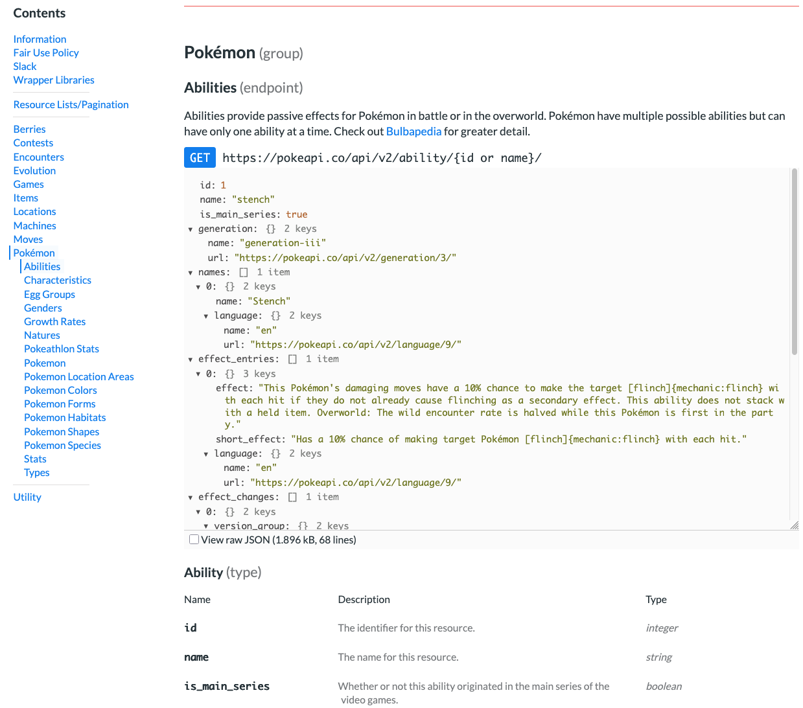

Introduction to APIs in R

Learning Objectives
By the end of this workshop, you should be able to:
- Explain what an API is.
- Be able to use API documentation to explore available API endpoints.
- Fetch data from an API using the
httr2library. - Understand pagination and be able to apply strategies to work with API limits.
- Use, and secure, an API key.
Today’s Session
This session is a mixture of live-coding and lecture.
- Please mute your microphone 🎙️.
- Please use the chat 💬 feature to ask questions during the session.
- We will have breaks every
50 minutes☕. - We will update codeshare.io/apis-in-r during the live coding portion.
- At the end of today’s session, please complete a short survey: bit.ly/apis-in-r-survey
Ways of accessing data
Manual
- Download files from the web (CSV, Excel, Text, Parquet, etc.)
- Copy manually from websites (tables, charts, text)
- Extract data from documents (Word or PDFs)
Automatic
- Databases
- APIs
- Web Scraping (Extract information from web pages programmatically)
- Sensors
Why use an API?
- You need the most up-to-date information.
- You don’t need everything - you can ask for exactly what you want.
- It’s repeatable - you can write code once, and reuse everytime you need new data.
What is an API?
API stands for:
Application Programming Interface
An API provides a way to communicate between your computer (the client) and a remote web service (the server).

Lets get cooking 🌶️
You go to a restaurant.
Rather than waiting to be seated you poke your head into the kitchen, and ask for a grilled cheese sandwich.
The chef promptly throws a spatula at your head. Now you have nothing to show for your effort but a head injury.
What went wrong?
You need someone to translate your request in a way the chef understands!
You need an API!
Let’s try this again.
You (the client) enter the restaurant and are seated.
A waiter (the API) arrives to take your order. You ask for a grilled cheese, extra cheese, with tomato. The waiter notes your order on a slip of paper (the request), which he posts on the turnstile at the kitchen.
The chef (server) reviews the request’s instructions, prepares a grilled cheese sandwich , and places it on the kitchen window, and hit’s a bell.
Your server, hearing the bell, brings you the grilled cheese sandwhich (the response), along with an apology from the chef for the head injury.
- Client: Requests grilled cheese
- API: Receives request and delivers to kitchen
- Server: Reviews request and generates response (grilled cheese)
- API: delivers response to client
Types of APIs
SOAP (legacy): XML-based, structured, rigid (common in banking/healthcare)
REST (modern): Flexible, human-readable, usually returns JSON.
Requests
When you want data from an API, you send a request. This request contains:
- The name of the resource you would like to access (data)
- A verb indicating what you want to do with the data.
REST and HTTP Methods
Common verbs in Rest APIs:
- Get: Retreive data (most common)
- Post: Create data
- Put: Update data
- Delete: Remove data
For data retrieval, we use GET.
Example:
GET https://pokeapi.co/api/v2/pokemon?limit=3&offset=0
API Request Structure
A typical API request has four main parts:
- HTTP Verb: what we are doing
GET - Base URL: main address
https://pokeapi.co/api/v2 - Endpoint: the specific resource we are acting on
/pokemon - Query Parameters: optional filters
?limit=3&offset=10
Full request:
GET https://pokeapi.co/api/v2/pokemon?limit=3&offset=10
Structure of an API Response
Each API response is composed of two parts:
header: information about the data (metadata)
body: the data (usually JSON)
Think of an API response like an envelope you received in the mail.

On the outside of the envelope there is information like:
- The address it was addressed to
- The address where it came from
- The postage date, which indicates when it was posted
This metadata, or “data about data”, tells you about the letter contained within — who sent it, to whom, and when?.
In an API response this is the API header. It contains information about the data being delivered.
The body of the API contains the actual contents of the letter (the data). These data are most commonly delivered as a JSON.
What is JSON?
JSON stands for JavaScript Object Notation.
It’s the most common format for data exchanged through APIs.
Think of JSON as a structured way of storing key–value pairs, like a list or dictionary in R or Python.
JSON Structure
JSON objects are made of:
- Keys (the name of a data field)
- Values (the data associated with that key)

Status Code
The status code tells you whether the request succeeded or failed
Status codes are 3-digit numbers returned by the server:
| Code | Meaning | Description |
|---|---|---|
| 200 | ✅ OK | The request succeeded and data is returned. |
| 201 | 🆕 Created | A new resource was successfully created. |
| 400 | ⚠️ Bad Request | The request was malformed or invalid. |
| 401 | 🔐 Unauthorized | Missing or invalid API key. |
| 403 | 🚫 Forbidden | You don’t have permission to access the resource. |
| 404 | ❓ Not Found | The endpoint or item doesn’t exist. |
| 429 | 🕐 Too Many Requests | You’ve hit the API’s rate limit. |
| 500 | 💥 Server Error | Something went wrong on the server side. |
API Endpoints
An API endpoint is a gateway where data is sent and received.
In RESTful web APIs, this corresponds to a URL.
https://pokeapi.co/api/v2/
API Endpoints
An API endpoint is a gateway where data is sent and received.
In RESTful web APIs, this corresponds to a URL.
https://pokeapi.co/api/v2/{endpoint}
API Documentation
Abilities
Abilities provide passive effects for Pokémon in battle or in the overworld.
GET https://pokeapi.co/api/v2/ability
{
"count": 367,
"next": "https://pokeapi.co/api/v2/ability/?offset=20&limit=20",
"previous": null,
"results": [
{
"name": "stench",
"url": "https://pokeapi.co/api/v2/ability/1/"
},
{
"name": "drizzle",
"url": "https://pokeapi.co/api/v2/ability/2/"
},
{
"name": "speed-boost",
"url": "https://pokeapi.co/api/v2/ability/3/"
},
{
"name": "battle-armor",
"url": "https://pokeapi.co/api/v2/ability/4/"
},
{
"name": "sturdy",
"url": "https://pokeapi.co/api/v2/ability/5/"
},Item
An item is an object in the games which the player can pick up, keep in their bag, and use in some manner. They have various uses, including healing, powering up, helping catch Pokémon, or to access a new area.
GET https://pokeapi.co/api/v2/item
{
"count": 2180,
"next": "https://pokeapi.co/api/v2/item/?offset=20&limit=20",
"previous": null,
"results": [
{
"name": "master-ball",
"url": "https://pokeapi.co/api/v2/item/1/"
},
{
"name": "ultra-ball",
"url": "https://pokeapi.co/api/v2/item/2/"
},
{
"name": "great-ball",
"url": "https://pokeapi.co/api/v2/item/3/"
},
{
"name": "poke-ball",
"url": "https://pokeapi.co/api/v2/item/4/"
},
{
"name": "safari-ball",
"url": "https://pokeapi.co/api/v2/item/5/"
},
{
"name": "net-ball",
"url": "https://pokeapi.co/api/v2/item/6/"
},
{
"name": "dive-ball",
"url": "https://pokeapi.co/api/v2/item/7/"
},
{
"name": "nest-ball",
"url": "https://pokeapi.co/api/v2/item/8/"
},
{
"name": "repeat-ball",
"url": "https://pokeapi.co/api/v2/item/9/"Pagination 📄
Many APIs return only part of the dataset at once.
Addditionally, APIs often enact limits on the number of results that can be returned over a given time period.
Which parts of the dataset are returned are controlled by two parameters:
limit: how many records to return
offset: how many records to skip
To get all results, you can loop over offsets:
https://pokeapi.co/api/v2/item/?offset=20&limit=20
API Key 🔑
Many APIs require something called an API Key
An API key is a unique code used to identify and authenticate a user or application when interacting with an API.
API keys are generally a string of alphanumeric characters, and look something like this:
zaCELgL0imfnc8mVLWwsAawjYr4RxAf50DDqtlx
API keys are a security measure to make sure you, or your application, are who you say you are.
API Key 🔑
An API key is like an ID card. You wouldn’t leave your ID card laying around. Anyone could just pick it up and pretend they are you!
If you store plaintext API keys in code and share it (e.g., on GitHub), anyone with access can read it!
How do we protect our API keys?

Environment Variables
A variable allows us to store information, and an environment is the system we execute our code on.
Environment variables allow us to store information specific to a system in variables.
Environment variables are not stored within our codebase, but are instead stored in a system specific configuration file.
We can use the environment variables configuration file to store our API key, and reference the configuration file in our code in order to load the API key.
Environment Variables in R
In R, environment variables can be stored in a text file with name-value pairs. Create a file in your home directory by running:
file.edit("~/.Renviron")
Using the API key listed earlier, we would declare an environment variable in our .Renviron file:
API_KEY = "zaCELgL0imfnc8mVLWwsAawjYr4RxAf50DDqtlx"
Now we can update our code to retrieve our API environment variable: